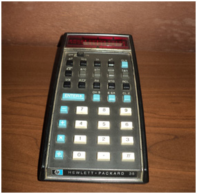

O Museu

O Museu de Computação do ICMC teve sua origem como um Museu de Instrumentos de Cálculo Numérico, idealizado e iniciado pelo Prof. Odelar Leite Linhares, então professor do Departamento de Ciências de Computação e Estatística. Segundo depoimento do Prof. Odelar, em novembro de 2001: “A ideia de se criar o Museu de Instrumentos de Cálculo Numérico, partiu da constatação de que, com o advento das minicalculadoras eletrônicas digitais lançadas pela HP em 1972 (e, mais tarde, dos microprocessadores pessoais), os instrumentos de Cálculo Numérico então em voga, como réguas de cálculo, máquinas de calcular mecânicas ou eletromecânicas, tabelas de funções matemáticas, principalmente as de funções trigonométricas, ábacos de todas as espécies, etc., se tornariam, em breve, obsoletos.
Em vista do incontestável sucesso desses novos instrumentos de cálculo e do consequente desuso dos antigos, ocorreu-nos reunir, em uma pequena sala, o que destes ainda possuíamos, para que sua lembrança de todo não desvanecesse. Tal acervo muito se ampliou em consequência de campanha que se fez, solicitando a quantos fossem, eventualmente, possuidores de tais instrumentos que no-los doassem, para que pudéssemos concretizar a criação de um museu de Instrumentos do Cálculo Numérico, como desejávamos. Fomos plenamente atendidos e o museu, em consequência, se tornou realidade.”.
A previsão do Prof Odelar se concretizou. As minicalculadoras digitais (e, posteriormente, os minicomputadores pessoais) difundiram-se rapidamente, tornando-se de uso obrigatório e generalizado em praticamente todos os ramos da atividade humana, substituindo completamente os dispositivos antes utilizados para a realização de cálculos.

HP-35 - Primeira Calculadora científica de bolso fabricada pela HP.
O Museu de Instrumentos de Cálculo Numérico foi instalado no interior da Biblioteca Prof. Achile Bassi, do ICMC, com as peças exibidas como parte do acervo da Biblioteca. Após a aposentadoria do Prof. Odelar, a coordenação do museu ficou a cargo do Departamento de Ciências de Computação e Estatística. Sempre houve interesse em retomar a iniciativa do Prof. Odelar e o acervo continuou a receber doações esporádicas, não só de instrumentos de cálculo, mas também de computadores e outros dispositivos computacionais que se tornavam obsoletos.
Na década de 2000, o ICMC transformou o Museu de Instrumentos de Cálculo Numérico em Museu de Computação e deu o nome do Prof. Odelar ao museu. O Museu de Computação Professor Odelar Leite Linhares herdou o acervo e a filosofia do Museu de Instrumentos de Cálculo Numérico. Nesse mesmo período, o museu, que estava atrelado ao Departamento de Ciências de Computação e Estatística, passou a estar vinculado à Comissão de Cultura e Extensão do ICMC. Data ainda dessa década, o primeiro regimento do museu que estabeleceu a criação dos cargos de curador, vice-curador e o conselho coordenador. A partir de janeiro de 2005, o Museu de Computação passou a ocupar a sala 4004 do ICMC, contando com uma área de 45 m².
Durante os anos de 2013 e início de 2014, a área destinada ao museu foi ampliada, passando a ocupar as salas 4004 e 4002 do ICMC, contando com uma área de 70 m2. Iniciou-se uma transformação do espaço destinado ao museu, visando integrá-lo ao ambiente de ensino e pesquisa do ICMC, oferecendo um ambiente agradável e uma opção de laser e cultura. O novo espaço do museu foi inaugurado no dia 10 de junho de 2014 com a exposição “Computação e Copa em um só ritmo”.